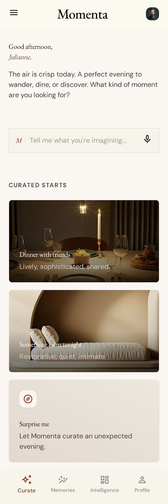
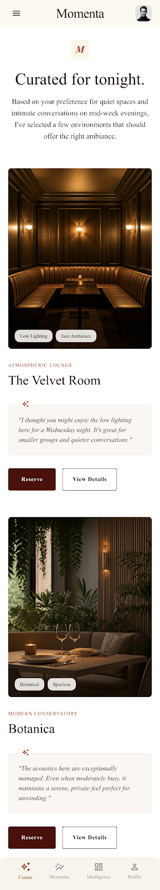
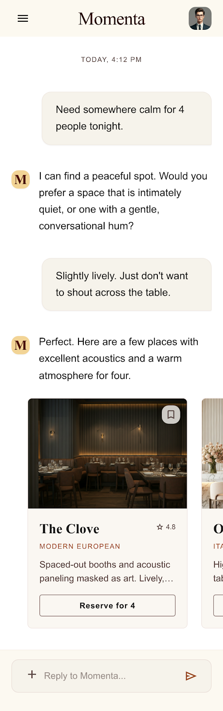
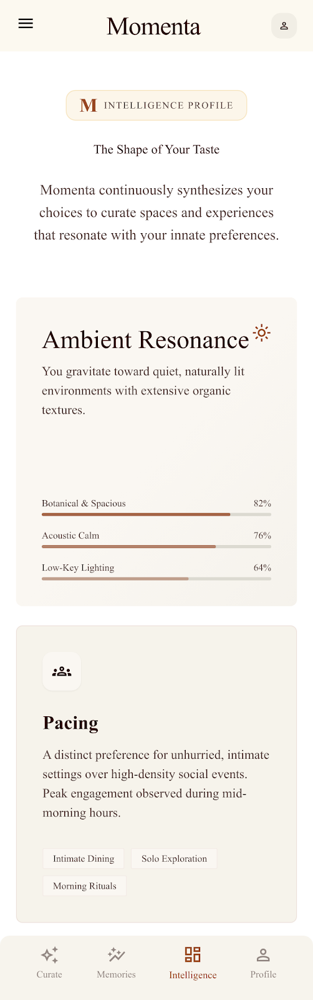
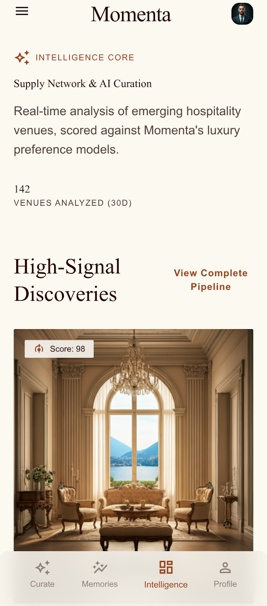

Section 1Introduction
The first proposal covered the why and the what: where Momenta sits, what the concierge should feel like, how supply intelligence reinforces it, and how the stack evolves. This document is the companion piece. It covers the how.
The goal here is to make the product tangible. What does the first user interaction actually look like. How does memory show up in practice. How does a group plan something together inside the app. What gets built first, what comes next, and what we can comfortably defer.
Treat this as a working execution sketch rather than a finished spec. The flows will tighten once we put the first version in front of real users, but this is a useful blueprint to argue against and refine.
Section 2Product Experience Vision
A few qualities the product should consistently hit:
- Warm. The app should feel like opening a conversation, not loading a tool. The first screen should never feel like work.
- Calm. No infinite feeds, no notification badges fighting for attention. Momenta is the opposite of TikTok in mood, even if some of the supply originally comes from there.
- Conversational. Most of the real product happens in a chat-like surface. Buttons and cards live around the conversation, not the other way around.
- Low friction. A user should be able to go from "I want to do something this weekend" to "booked" in under a minute on a good day.
- Group-aware. The product never forgets that most plans involve other people. Group context should be a first-class object, not an afterthought.
- Quietly intelligent. The system should reveal what it knows about a user through better recommendations, not through dashboards or "we learned X about you" moments.
Section 3Concierge MVP Flow
Walking through what the first end-to-end experience could look like.
Step 1 · Onboarding (under 60 seconds)
- User signs up with phone or email.
- One screen asking: city, a couple of basic preferences (vibe-leaning sliders or quick taps, not a long form), and whether they usually go out solo, as a couple, or with a group.
- That is it. No 12-question personality quiz. The system will learn the rest by watching.
Step 2 · First Interaction
- User lands on the concierge screen. A short greeting, then one lightweight prompt: "What are you thinking about? A dinner, something this weekend, a place to take someone?"
- The user types or taps a suggested chip ("dinner tonight", "weekend plans", "spot for a friend visiting").

Step 3 · Contextual Questioning
- The concierge asks at most one or two short follow-ups to narrow the recommendation. Examples:
- How many of you?
- Calm or lively?
- Any vibe you are leaning toward?
- It should feel like a friend texting back, not a form unfolding.
Step 4 · Recommendation Generation
- The concierge returns two or three curated options pulled from the approved supply database through the recommendation layer.
- Each option includes: a photo or two, a one-line "why this fits", practical details (price band, neighborhood, group friendliness), and a primary action (book / hold / save).
- No infinite scroll. If none feel right, the user can say so and the concierge adjusts.

Step 5 · Booking
- Booking happens inside the conversation. Date, time, party size, any notes, confirm.
- For supply that is not directly bookable yet, the concierge can hand off through WhatsApp or a confirm flow, matching how Momenta already operates.
Step 6 · Feedback Loop
- After the experience, a single lightweight prompt: a thumbs up/down and one optional sentence.
- That signal feeds two things: the user's behavioral profile and the supply scoring system.
The whole loop should feel light. The user should never feel like they are "training" the system.
Section 4Example AI Interactions
Sample concierge exchanges. Tone is warm, lightly opinionated, short.

The examples below use real-world-style venue references to make the flows concrete. In production, the concierge would only recommend experiences from Momenta's approved supply layer.
Example 1 · Date night in Bogota
User: date night idea for tomorrow, something calm
Concierge: Got it. Just the two of you?
User: yeah
Concierge: Two directions I'd lean toward:
- Mesa Franca in Chapinero. Low lighting, small plates, the kind of place where you can actually hear each other.
- El Chato if you want something a little more elevated. Slower pace, intentional menu, good for a real conversation.
Want me to lock something in?
Example 2 · Friend visiting from out of town (New York)
User: my friend Mateo is in town Saturday, want to take him somewhere
Concierge: Nice. How many of you total, and is he more the laid-back-dinner type or up for a bigger night?
User: four of us, more laid back
Concierge: Try Via Carota for an early dinner, then drinks at Dante a few blocks over. Walkable, both feel like the city without trying too hard.
Example 3 · Group dinner in London
User: dinner for 6 friday, one vegetarian one no spice
Concierge: That narrows it usefully. Dishoom handles both well, their menu actually has range instead of one sad side dish. Ask for a quieter table near the back if you want to actually talk.
Example 4 · Quiet workspace cafe (Mexico City)
User: somewhere to work for a few hours tomorrow, good coffee
Concierge: Cafe Avellaneda in Coyoacan is the safe pick if you want quiet and good coffee. If you want something a little more design-forward and easy to linger in, Buna in Roma is a solid call in the mornings.
Example 5 · Birthday planning in Paris
User: planning my birthday end of next month, group of 10ish, want something memorable
Concierge: Fun. A few directions before I narrow: dinner-and-then-out, a private space for the whole night, or an experience-style thing like a tasting?
User: private space, dinner into drinks
Concierge: Two strong directions. Septime style places tend to handle small groups well if you want food at the center. Or somewhere like Clown Bar, looser, more characterful, easier to flow from dinner into drinks without changing rooms. Want me to check what's actually available for that week?
Across all of these, the concierge stays short, picks a direction, and explains the why in one sentence. No essays.
Section 5Behavioral Memory Examples
How memory actually shows up over time. The point is that recommendations get sharper without the user ever filling out a preference page.

After 3 bookings
- System notices the user keeps choosing calmer spots and declining anything described as "lively" or "club-adjacent".
- Next time they ask for somewhere new, the concierge skips the loud places by default and only surfaces them if the user asks for something different.
After 6 bookings
- System notices Friday bookings tend to be group dinners of 4-6, Saturday bookings tend to be couple-only.
- When they say "something for tomorrow" on a Thursday, the concierge can reasonably guess group size and ask one short confirming question instead of three.
After a declined recommendation
- User passes on a place and says "too far". System tags that location/area combination, weights nearby options higher next time.
- User passes on a place and says "not really our vibe". System looks at what categories or descriptors that venue had and softens those for this user going forward.
Recurring companions
- The user keeps booking with the same two friends. Over time the system can recognize this as a recurring group and recall their shared preferences (one vegetarian, one likes outdoor seating) without the user repeating it.
Weekday vs weekend pattern
- User books quiet cafes on weekdays and louder dinners on weekends. The same prompt ("somewhere to eat tonight") gets interpreted differently depending on the day.
None of this requires explicit user action. It comes out of bookings, conversational signals, and the lightweight post-experience feedback.
Section 6Group Dynamics and Social Context
Most of the AI recommendation literature assumes a single user. Momenta does not have that luxury. Some practical principles:
- Group is a first-class object. A recurring group of friends (or a couple) gets its own preference profile, distinct from the individual profiles inside it. This lets the system reason about "you and Mateo and Sofia" rather than averaging three separate users.
- Overlap before compromise. When recommending for a group, the system looks for venues that genuinely satisfy everyone's constraints first (dietary, accessibility, price comfort) before optimizing for shared preference signals.
- Soft compromise is better than rigid optimization. If two members lean quiet and one leans lively, the concierge can suggest a quieter place with energy ("calm dining room but the bar gets fun later") rather than forcing a tradeoff.
- Group planning can be conversational. Eventually, a shared concierge thread that multiple group members can drop into ("we are picking somewhere for Saturday, what do you all think") becomes a natural product surface. Not for MVP, but the model should leave room for it.
- Default to the organizer's context. The person initiating the booking carries the most context. The system can lean on their profile while still respecting known group constraints.
Group recommendation is harder than individual recommendation, but it is also where Momenta's product is genuinely different from anything else.
Section 7Supply Intelligence Operational Flow
The internal pipeline that feeds the concierge. None of this is user-facing, but it is what keeps recommendation quality high without burning out the team on manual scouting.
One thing worth being explicit about: supply intelligence runs in the background, not during a user's chat. Discovery, enrichment, scoring, and approval all happen asynchronously. By the time a user is talking to the concierge, the system is only ever drawing from supply that has already been approved. Approval is never a live step in a conversation.

1. Discovery
- Crawlers and watchlists pull candidate venues and experiences from Instagram, TikTok, Google Maps, local press, and tip submissions.
- Each candidate enters the system as a draft entity with whatever signals were available at discovery.
2. Enrichment
- A background pipeline pulls in photos, menus, opening hours, neighborhood, price band, and any social proof (mentions, follower velocity, review sentiment).
- AI assists by summarizing review patterns, tagging vibe descriptors, and flagging inconsistencies (advertised hours versus actual reviews).
3. Scoring
- Each candidate gets scored on dimensions that map to Momenta's brand: aesthetic quality, consistency, group friendliness, host responsiveness, uniqueness, price-to-experience ratio.
- Scores are explainable. Each one points back to the signals that drove it.
4. Review and Approval
Approval can run in three modes, applied based on the candidate's signals and risk profile:
- Human Review Required. The default in the early MVP. Used for new host categories, premium or high-risk experiences, ambiguous quality signals, low-confidence AI scoring, safety- or brand-sensitive experiences, and first-time providers. The team sees a ranked queue with everything pre-summarized, so reviewing a venue takes minutes instead of an afternoon.
- AI-Assisted / Fast-Track Approval. Introduced once the system has enough track record. AI prepares the recommendation when signals are strong (consistent positive reviews, clear fit with Momenta's rules, strong visual quality, reliable metadata). Humans batch-confirm rather than reviewing from scratch.
- AI Auto-Approval. Used later for very high-confidence, low-risk candidates: repeat hosts, existing partners adding new experiences, low-risk categories, candidates that match patterns of historically successful supply. Auto-approved candidates are still auditable, and periodic human audits sample them to protect quality.
The point is not that AI replaces humans. AI takes more of the approval burden over time while the team stays focused on edge cases, brand-sensitive decisions, and quality control. Rejected candidates feed back into the model so similar misses do not keep surfacing.
5. Approved Supply and Host Onboarding
- Approved venues move into the active supply pool. If outreach to the host is needed, the system drafts the first message and tracks status.
6. Recommendation Integration
- Approved supply becomes available to the concierge. Booking outcomes and post-experience feedback flow back into the scoring layer, sharpening future ranking.
The point of this layer is leverage. A team of two or three people doing curation with this kind of support, plus AI handling the high-confidence cases over time, should produce more vetted supply than a team of ten doing it manually.
Section 8MVP Build Phases
Phasing things so we can learn fast and avoid building anything we do not yet need.
Phase 1 · Conversational Concierge MVP
- Goal. Prove the conversation-first experience with real users.
- Build. Chat interface, minimal onboarding, manually curated supply (start from what Momenta already has), 2-3 recommendation flow, in-conversation booking handoff (can route through existing WhatsApp ops).
- Validate. Do users prefer this to current discovery. Do they book. What do they ask for that we cannot answer yet.
- Defer. Heavy personalization, group accounts, supply automation.
Phase 2 · Behavioral Memory Layer
- Goal. Make the second and third interactions noticeably better than the first.
- Build. Per-user preference store, conversational memory, lightweight semantic retrieval over past interactions and supply, post-experience feedback loop.
- Validate. Does memory measurably improve recommendation acceptance. Are users coming back more often.
- Defer. Full group profiles, real-time multi-user threads.
Phase 3 · Supply Intelligence Automation
- Goal. Scale supply quality without scaling the curation team linearly.
- Build. Discovery pipeline, enrichment workers, scoring model, internal review queue, feedback loop into scoring.
- Validate. Is the team approving high-scoring candidates at a high rate. Is supply growth tracking ahead of demand growth.
- Defer. Fully autonomous onboarding.
Phase 4 · Social and Group Intelligence
- Goal. Make group planning a first-class experience.
- Build. Group profiles, shared concierge threads, group-aware recommendation logic, lightweight invite/coordination flow.
- Validate. Do groups plan inside Momenta instead of bouncing to WhatsApp halfway through.
- Defer. Anything that does not serve the group planning loop directly.
Section 9Technical Execution Notes
Staying high level here. Detail belongs in implementation, not in a planning doc.
- Conversational state. Keep it simple. A structured store of the current thread, recent turns, and any extracted intents. PostgreSQL is fine for this.
- Behavioral memory. Two layers. A structured profile (preferred ambience, typical group size, price band, dietary constraints) updated from explicit and inferred signals. And an embedding-based memory of past interactions and bookings for semantic recall.
- Semantic retrieval.
pgvectorinside the existing Postgres instance. Index past bookings, conversation snippets, and supply descriptions. Query at recommendation time to surface relevant context. - Recommendation pipeline. Pull a candidate set from the curated supply database using structured filters (location, party size, constraints), then re-rank using behavioral signals and semantic similarity. Keep the model swappable.
- Supply intelligence workers. BullMQ jobs for discovery, enrichment, scoring, and embedding generation. Each step is independent and observable. Failures are recoverable.
- Conversational layer. An LLM call wrapped around retrieved context. The model never invents supply. It only speaks fluently about candidates the system already approved.
- Feedback ingestion. Post-experience feedback writes to both the user profile and the supply scoring layer. Both updates are small, frequent, and reversible.
This is enough to ship a meaningful Phase 1 without adding new infrastructure beyond what is already in place.
Section 10A Note on the Visual Concepts
The mockups embedded throughout this document were generated quickly using Google Stitch as directional visuals for the proposal. They are not meant to represent final UI/UX design work. My main strength is in AI systems, backend architecture, product thinking, and technical execution, so I would still recommend dedicated UX/UI support as the product matures. I included these visuals to make the proposed user and supply flows easier to understand, and to show how quickly we can turn product ideas into something tangible for discussion.
Section 11Closing Thoughts
A lot of consumer products try to be everywhere a user might look. Momenta has a chance to do the opposite, to be the one place a user goes when they actually want to decide. That is a smaller surface, but a much more valuable one.
The combination of curated supply and a concierge that gets to know you is not a feature set, it is a relationship. The first booking proves utility. Repeated bookings build trust. Over time, Momenta becomes the place users return to when they want a decision they can feel good about. If we build toward that, the product stops competing with TikTok or Google Maps and starts occupying its own slot in the user's life.
Most of the ideas in this document are not complicated on their own. The work is in sequencing them well, keeping the experience calm while the system underneath gets smarter, and resisting the urge to bolt on features that do not serve the core relationship. If we hold that line, I think Momenta becomes something pretty special.
Looking forward to building it.